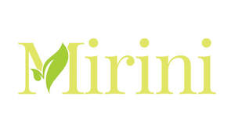

Trade Mark Journal No.2025/040 3 October 2025
UK00004259469 4 September 2025 (3,5,35)

- Class 3
- Skin care creams, other than for medical use; Skin care oils [cosmetic]; Skin care lotions [cosmetic]; Skin care oils [non-medicated]; Essences for skin care; Skin care creams [cosmetic]; Cosmetic creams for skin care; Skin care cosmetics; Milky lotions for skin care; Skin care (Cosmetic preparations for -); Cosmetic preparations for skin care; Exfoliants for the care of the skin; Hair care creams [for cosmetic use]; Non-medicated skin care preparations; Hair care lotions [for cosmetic use]; Cleansing milks for skin care; Hair care creams; Skin care preparations; Hair care lotions; Cosmetic products in the form of aerosols for skin care; Perfumed oils for skin care; Skin tonics [non-medicated]; Beauty creams for body care; Cosmetics for the treatment of dry skin; Sun care lotions [for cosmetic use]; Hair care serums; Cosmetic hair care preparations; Skin recovery creams [cosmetics]; Skin care mousse; Hair strengthening treatment lotions; Body care cosmetics; Cosmetic preparations for body care; Wrinkle removing skin care preparations; Cosmetics for use in the treatment of wrinkled skin; Skin lotions; Non-medicated skin lotions; Moisturising skin lotions [cosmetic]; Skin cleansers [cosmetic]; Skin balms [cosmetic]; Eye care products, non-medicated; Skin creams [for cosmetic use]; Skin cleansers [non-medicated]; Sets of cosmetic oral care products; Skin moisturizers used as cosmetics; Horse oil cream for skin care; Non-medicated skin creams; Non-medicated body care preparations; Moisturising skin creams [cosmetic]; Herbal extracts for cosmetic purposes; Cosmetic creams for dry skin; Non-medicated skin serums; Sun care lotions; Skin whitening creams; Sun care preparations for cosmetic use; Hair care preparations; Skin, eye and nail care preparations; Nutritional creams (Non-medicated -).
- Class 5
- Liquid herbal supplements; Homeopathic supplements; Herbal medicine; Herbal preparations for medical use; Homeopathic medicines; Anti-oxidant food supplements; Herbal sprays for medical use; Herbal compounds for medical use; Homeopathic anti-inflammatory ointments; Herbal extracts for medical purposes; Anti-oxidants obtained from herbal sources; Liquid nutritional supplements; Liquid dietary supplements; Medicated ointments for application to the skin; Nutritional supplements; Herbal tea for medicinal use; Probiotic supplements; Pharmaceutical products and preparations for hydrating the skin during pregnancy; Herbal dietary supplements for persons special dietary requirements; Acne creams [pharmaceutical preparations]; Herbal beverages for medicinal use.
- Class 35
- Wholesale services in relation to dietary supplements.
Paul Thomas